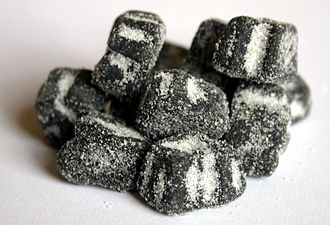

<!DOCTYPE html>
<html lang="en">
<head>
    <meta charset="UTF-8">
	<meta name="viewport" content="width=device-width, user-scalable=no, initial-scale=1.0, maximum-scale=1.0, minimum-scale=1.0">
    <title>Welcome to Finland Stories</title>
    <link rel="stylesheet" href="../style.css">
</head>

</html>

<body class="blog-posts">
	<section class="header header-top">
		<div class="greeting"><h3>An Interactive Guide to Finland for International Students</h3></div>
		<div class="header-items">
		    <div class="logo">FinInNote</div>
		    <input type=text class="search-bar" name="seach" placeholder="What are you looking for...">
		    <button type="button">Search</button>
		</div>
		<nav class="nav-bar" onclick="myFunctionX(this)">
          <div class="bar1"></div>
          <div class="bar2"></div>
          <div class="bar3"></div>
        </nav>
    </section>
    
    <section class="header header-body">
		<div class=header-breadscrum>
		    <a href="../index.html" id="finland">Home</a>
		    <span class="divider">></span>
		    <a href="../travel.html" id="travel-breadscrum">Travel</a>
		    <span class="divider">></span>
		    <a href="#" id="planning">Planning</a>
		    <span class="divider">></span>
		    <a href="travel-top-local-food.html" id="local-food-breadscrum">Local Food</a>
		    <div class="line"></div>
		    <p id="title">The Finnish Local Taste buds</p>
		    
		</div>
    </section>
    
    <section class="header header-bottom">
        <nav class="main-menu" id="myTopnav">
		    <span id="home"><a href="../index.html">Home</a>
		    <div class="line"></div>
           </span>
           
            <span id="about">
                <a href="../about.html">About</a>
                <div class="line"></div>
            </span>
           
            <div class="sub-nav">
                <span id="study">
                    <a href="../study.html">Study</a>
                    <a class="sub-menu" href="../study/study-finnish-language.html">Language</a>
                    <a class="sub-menu" href="../study/study-universities.html">Universities</a>
                    <a class="sub-menu" href="../study/post1.html">Scholarship</a>
                    <a class="sub-menu" href="../study/study-entrance-exam.html">Exams</a>
                    <div class="line"></div>
                </span>
		    </div>

            <div class="sub-nav">
            <span id="life"><a href="../life.html">Life</a>
                    <a class="sub-menu" href="../life/life-housing.html">Housing</a>
                    <a class="sub-menu" href="../life/life-marriage.html">Family</a>
                    <a class="sub-menu" href="../life/life-pet-visa.html">Pets</a>
                    <a class="sub-menu" href="../life/top-ten-finnish-taboos.html">Tips</a>
                    <a class="sub-menu" href="../life/life-insurrance.html">Insurance</a>
                    <div class="line"></div>
            </span>
            </div>      	        

            <div class="sub-nav">
                <span id="travel" class="active-page"><a href="../travel.html">Travel</a>
                    <a class="sub-menu" href="travel-budget.html">Budget</a>
                    
                    <a class="sub-menu" href="travel-top-local-food.html">Food</a>
                    
                    <a class="sub-menu" href="travel-go-with-us-helsinki.html">Guides</a>
                    <a class="sub-menu" href="travel-reliable-agencies.html">Agency</a>
                    
                    <div class="line"></div>
                </span>
		    </div>
            
            <span id="policy"><a href="../policy.html">Policy</a>
		    <div class="line"></div></span>               

            <span id="contact"><a href="../contact.html">Contact</a>
		    <div class="line"></div></span>    

		</nav>

	</section>
	
	<section id="travel-top-local-food">
		
        <h3 style="text-align: center;"><span style="color: #ff6600;font-size: 2rem;text-align: center;"><strong>Top MUST-TRY local foods when travelling Finland&nbsp;</strong></span></h3>
        <p>&nbsp;</p>
        
        <ol>
        <li style="font-weight: 400;" aria-level="1"><em><span style="font-weight: 400;">When people travel somewhere, they tend to research and find out specific foods in that place to try, enjoy.&nbsp;</span></em></li>
        <li style="font-weight: 400;" aria-level="1"><em><span style="font-weight: 400;">Finland is always one of the happiest countries in the world, people are satisfied with their lives and policies from the government. Does food have some strong influences on that?&nbsp;</span></em></li>
        <li style="font-weight: 400;" aria-level="1"><em><span style="font-weight: 400;">In this article, we will recommend for you - traveller, international student some traditional foods you should try when coming to Finland.&nbsp;</span></em></li>
        </ol>
        <p><br /><br /></p>
        <h3><strong><span style="text-decoration: underline;">LIST ITEMS:</span> </strong></h3>
        <p><span style="font-weight: 400;">1. Travelling around the world is now easier and more convenient than the past many times due to the development of transportations, especially planes, subway and infrastructure. People can go and start a trip anywhere, anytime they want, all they need are time and financial resources.&nbsp;</span></p>
        <ul>
        <li style="font-weight: 400;" aria-level="1"><span style="font-weight: 400;">There are a lot of elements which attract tourists to come, enjoy and choose that place for their vacation such as culture, festivals, people, interesting destinations, food &amp; drink (cuisine).</span></li>
        <li style="font-weight: 400;" aria-level="1"><span style="font-weight: 400;">The destination is the main reason for making a place or country popular and well-known. Depending on the age and people&rsquo;s hoppy, they will choose natural destinations such as an ecotourism area, forest for flora and fauna conservation, natural areas with few people or some modern and hectic places like amusement parks, high-tech games and exhibitions.</span></li>
        <li style="font-weight: 400;" aria-level="1"><span style="font-weight: 400;">Besides interesting destinations, visitors also come to a country by its cuisine, especially traditional food. As you know that each nation will have its own cuisine culture and recipe which make their dishes different from others&rsquo; ones. People often say that cuisine is the quintessence of a nation because it is a mixture of classical and modern. The cuisine is not only a long-standing cooking secret, but it is also the best evidence of the combination of culture and customs of that country. What a pity if you travel to a country, but you don&rsquo;t have a chance to try traditional food there.</span></li>
        </ul>
        <p><span style="font-weight: 400;">2.&nbsp;</span>Finnish cuisine is not an exception. The title "the happiest country in the world" does not come from well-equipped infrastructure, social policy, people's awareness but also comes from the food, what they eat every day. According to an article, delicious foods are also an element which makes Finnish people happy with their life because when they eat those foods, they are assured of the health and quality of the products. An example is that Finnish wild forest berries, agricultural plants and livestock are cultivated and grown in the clean arctic air with very limited need for pesticides. The result is the dense and unique taste of Finnish food.&nbsp;</p>
        <p>3.&nbsp;Here we go to some specific dishes which are common and unique in Finland. They are recommended by a lot of people who have tried them before.</p>
        <ul>
        <li style="font-weight: 400;" aria-level="1">
        <h3><strong><span style="background-color: #ffff00;">Leip&auml;juusto (Bread cheese)</span>: </strong><span style="font-weight: 400;">Juustoleip&auml; is a typical dessert from northern Finland. It is made from cow&rsquo;s milk and has a special consistency. You can find the cheese in all local stores, and all you need to do are heating it in a pan and topping it with stirred cloudberries. This dessert will be more delicious if you can enjoy it with a cup of tea or coffee. With people who have a sweet tooth, Juustoleip&auml; is one of the best choices for them.</span></h3>
        </li>
        </ul>
        
        <ul>
        <li style="font-weight: 400;" aria-level="1">
        <h3><span style="background-color: #ffff00;"><strong>Lohikeitto (</strong><strong>Creamy salmon soup): </strong></span><span style="font-weight: 400;">Lohikeitto is a delicious fish soup med with cream. It&rsquo;s a simple and satisfying dish which is made with fresh spring salmon, chunky potatoes, carrots, and leeks. The flavours are unpretentious and clean, with a traditional dill infused broth touched with allspice will bring to eater a fresh and comfortable feeling.</span></h3>
        </li>
        </ul>
        
        <ul>
        <li style="font-weight: 400;" aria-level="1">
        <h3><span style="background-color: #ffff00;"><strong>Ruisleip&auml; (</strong><strong>Classic Finnish rye bread): </strong></span><span style="font-weight: 400;">Rye bread (Ruisleip&auml; or hapanleip&auml; in Finnish) is a sour, dark bread produced in large quantities in Finland, where it is the most popular. You can find this type of bread from the urban city to the remote areas, it's served as breakfast. Compared to the world's popular German-style pieces of bread, Finnish rye bread tends to be less oily or with a wetter texture. </span></h3>
        </li>
        </ul>
        <p>&nbsp;</p>
        
        <p>&nbsp;</p>
        <ul>
        <li style="font-weight: 400;" aria-level="1">
        <h3><span style="background-color: #ffff00;"><strong>Poronk&auml;ristys (</strong><strong>Saut&eacute;ed reindeer): </strong></span><span style="font-weight: 400;">Finns enjoy reindeer meat all year round. This classical style is not only popular in Finland but also in other Nordic countries, although there are local variations. In Finland, the reindeer meat is sliced thinly and sauteed in water, cream or beer and served with mashed potatoes, pickled cucumbers and cranberry sauce.</span></h3>
        </li>
        </ul>
        
        <p>&nbsp;</p>
        <p>&nbsp;</p>
        <ul>
        <li aria-level="1">
        <h3><strong><span style="background-color: #ffff00;">Salmiakki (Salty liquorice):</span> <span style="font-weight: 400;">Salmiakki is perhaps the best known of all the quirky Finnish dishes! This liquorice is flavoured with salmiak (ammonium chloride) salt. In Finland, this dish is so popular that you'll find sweets, wine, milkshakes, sauces, ice cream, cakes and muffins (&hellip;) with salmiakki flavour.&nbsp;</span></strong></h3>
        </li>
        </ul>
        <p>&nbsp;</p>
        
        <p>&nbsp;</p>
        <ul>
        <li style="font-weight: 400;" aria-level="1">
        <h3><span style="background-color: #ffff00;"><strong>Karjalanpiirakka (</strong><strong>Karelian pasties/pies): </strong></span><span style="font-weight: 400;">Karelian Pasty is a type of cake with a crust filled with rice porridge. It is also known as karjalanpiirakka and Karelian Pie. The dish originates from Karelia, a historic territory located between Finland and Russia. In modern times, it is considered the national dish of Finland. Karelian Pasties are made from pastries filled with mashed potatoes or rice cakes. They are usually eaten with custard or other toppings.</span></h3>
        </li>
        </ul>
        
        <p><br /><br /><span style="text-decoration: underline;"><strong>CONCLUSION:</strong></span> <span style="font-weight: 400;">Like other counties, Finland also have many unique dishes, those make Finnish cuisine is better and better in tourists&rsquo; and people&rsquo;s eyes. When you have a chance to Finland, just follow up on our list and try those traditional foods. If you are interested in Finland, you can find other articles on our website.</span></p>


		

	</section>
    <section class="footer">
		<div class="footer-grid-container">
		    <div class="footer-0"><h3>FinInNote</h3>
		    <span>@2020 FPP <a href="policy.html">PRIVACY POLICY</a></span></div>
           <div class="social-media"><h4>Follow Us</h4>
           <a href="https://facebook.com"><span id="facebook" style=background-image:url(../images/fb.png)></span></a>
           <a href="https://youtube.com"><span id="youtube" style=background-image:url(../images/youtube.png)></span></a>
           <a href="https://instagram.com"><span id="instagram" style=background-image:url(../images/instagram.png)></span></a>
           <a href="https://twitter.com"><span id="twitter" style=background-image:url(../images/twitter.png)></span></a>
           <a href="https://linkedin.com"><span id="linkedin" style=background-image:url(../images/linkedin.png)></span></a>
           </div>
		    
		    <div class="footer-1">About
		        <p>Welcome to Finland!<br>FinInNote is on a mission to assist all International Students to vistit and integrate into Finland easily and effortlessly.<br>Because we KNOW and we CARE! <br>
		        SEND US A LETTER! In case you would like to chat.</p>
		    </div>
		    <div class="footer-2">Study
		        <ul>
		            <li><a href="finnish-language.html">Language</a></li>
		            <li><a href="universities.html">Top Universities</a></li>
		            <li><a href="scholarship">Scholarships</a></li>
		            <li><a href="exam-admission.html">Exams & Admission</a></li>
		            <li><a href="study-guides.html">Study Guides</a></li>
		            <li><a href="community.html">Community</a></li>
		        </ul>
		    </div>
		    <div class="footer-3">Life
		        <ul>
		            <li><a href="cost-of-living.html">Cost of living</a></li>
		            <li><a href="lifestyle.html">Lifestyle</a></li>
		            <li><a href="accommodation.html">Accommodation</a></li>
		            <li><a href="food-expense.html">Food & Expenses</a></li>
		            <li><a href="holidays-events.html">Holidays & Events</a></li>
		            <li><a href="hall-of-joy.html">Hall of Joys</a></li>
		        </ul></div>
		    <div class="footer-4">Travel
		    <ul>
		            <li><a href="attractions.html">Top Attractions</a></li>
		            <li><a href="family-travel.html">Family on budget</a></li>
		            <li><a href="journey-planner.html">Journey Planner</a></li>
		            <li><a href="what-to-bring.html">What to bring?</a></li>
		            <li><a href="transportation.html">Transportation</a></li>
		            <li><a href="travel-recommendations.html">Recommendations</a></li>
		        </ul></div>
		    <div class="footer-5">Trade Center
		    <ul>
		            <li><a href="secondhand-items-hunt.html">Secondhand Items Hunting</a></li>
		            <li><a href="rent-buy.html">Rent or Buy</a></li>
		            <li><a href="coupons.html">Coupons & Discount</a></li>
		            <li><a href="lucky.html">Feeling lucky</a></li>
		            <li><a href="wholesale.html">Wholesale</a></li>
		        </ul></div>
		    <div class="footer-6">Services
		    <ul>
		            <li><a href="inquiries.html">Inquiries & support</a></li>
		            <li><a href="faqs.html">FAQs</a></li>
		            <li><a href="storage-service.html">Storage Service</a></li>
		            <li><a href="apartment-hunting.html">Apartment Hunting</a></li>
		            <li><a href="pickup-deliver.html">Pickup & Deliver</a></li>
		            <li><a href="job.html">Job Application</a></li>
		        </ul></div>
		</div>
		<div class="back-to-top-button">
		<a href="#post1" class="footer-button"><h4>Back To Top</h4> <span style=background-image:url(../images/character-01.png)></span></a>
		</div>
		<section class="footer-bottom">
            
            <div><h3>All Rights Reserved @2020</h3></div>		    
		</section>

    </section>
    
    	<script>
    // When the user scrolls the page, execute myFunction
    window.onscroll = function() {myFunction()};

    // Get the navbar
    var myTopnav = document.getElementById("myTopnav");

    // Get the offset position of the navbar
    var sticky = myTopnav.offsetTop;

    // Add the sticky class to the navbar when you reach its scroll position. Remove "sticky" when you leave the scroll position

    function myFunction() {
        
        
      if (window.pageYOffset >= sticky-13) {
          
        myTopnav.classList.add("sticky")
      } else {
        myTopnav.classList.remove("sticky");
      }
    }
    </script>
	<script src="script.js"></script>
</body>


